ダウンロードとインストール
-
ページ上の 最新版をダウンロード ボタンを押します。ブラウザの「ダウンロード」に
VALORANT-Store-Watcher-Setup.exeが保存されます。ブラウザが「一般的にダウンロードされていません」などと表示したら、メニューから 保存（または 保持する）を選んでください。
-
ダウンロードしたファイルをダブルクリックします。
-
青い画面で「WindowsによってPCが保護されました」と出たら、詳細情報 を押してから 実行 を押します。
個人で作ったアプリで「デジタル署名」を付けていないために出る表示です。
-
インストーラーの案内に沿って 次へ を押していき、最後に 完了 を押します。管理者権限（パスワード）は必要ありません。
-
デスクトップにできた VALORANT Store Watcher のアイコンから起動します。
アンインストールするには
Windowsの 設定 → アプリ → インストールされているアプリ から削除できます。途中で「ユーザーデータも削除しますか？」と聞かれたら、ウィッシュリストや履歴も消したい場合だけ はい を選びます。
はじめての起動
初めて起動すると、スキンの名前と画像を数秒で読み込みます（インターネット接続が必要です）。この時点ではまだRiotアカウントとつないでいないので、ダッシュボードに「Riotアカウント連携が未設定です」と表示されます。これで正常です。
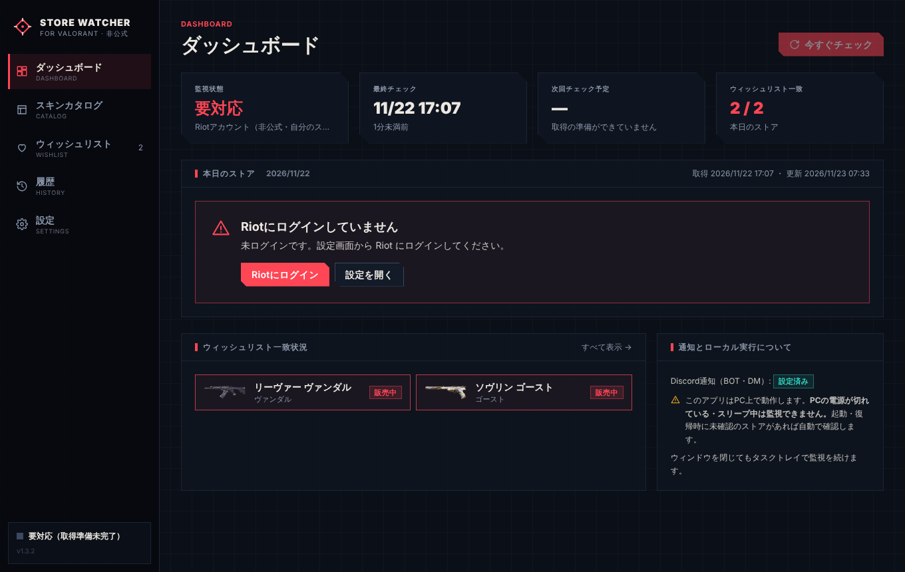
このあと、欲しいスキンの登録 → Riotアカウントとの連携 → 通知の設定 の順に進めます。全部で10分ほどです。
欲しいスキンを登録する
-
左のメニューから スキンカタログ を開きます。
-
上の検索欄にスキン名を入れます。日本語でも英語でも探せます（例：
リーヴァー、Reaver、プライム ヴァンダル）。武器の名前のボタンで絞り込むこともできます。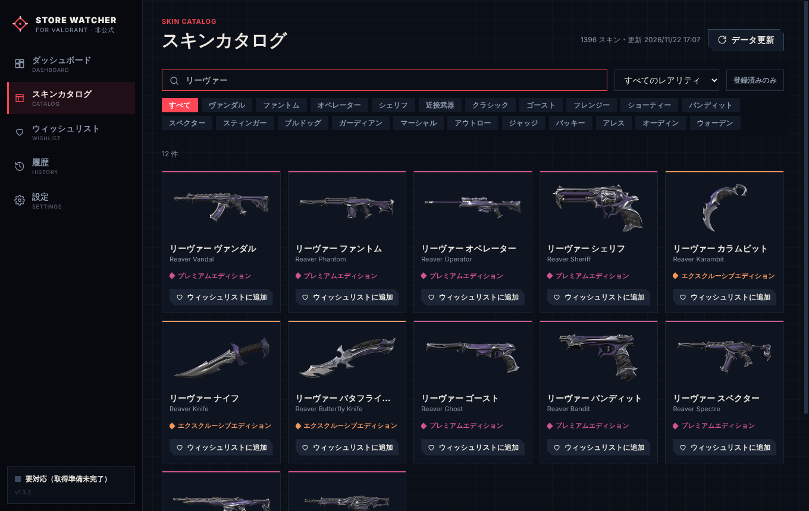
-
欲しいスキンのカードにある ウィッシュリストに追加 を押します。登録済みのカードは 登録済み に変わります。いくつでも登録できます。
-
左のメニューの ウィッシュリスト で一覧を確認できます。高・中・低 のボタンで優先度を決められ、上にあるほど通知の中で先に表示されます。並び順はドラッグか ▲▼ ボタンで変えられます。
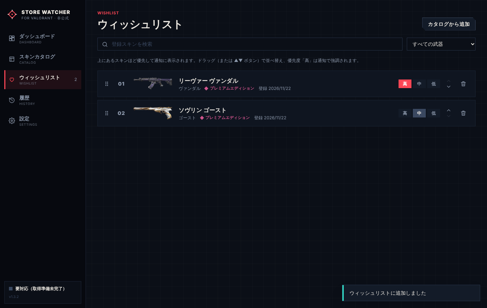
自分のストアを取得する（Riotアカウント連携）
はじめにお読みください
- Riot Games の公式の仕組みには、個人のデイリーストアを見る方法がありません。このアプリはゲームが内部で使っている非公開の仕組みを使う、非公式な方法でストアを取得します。
- Riotの利用規約に反する可能性があり、アカウントに制限がかかる可能性はゼロではありません。また、Riot側の変更で突然使えなくなることがあります。
- Riotのパスワードはアプリに渡りません。ログインはRiot公式のログインページで行い、アプリが保存するのはログイン後にRiotが発行する「ログイン情報（Cookie）」だけです。これはWindowsの暗号化機能で守られます。
- このログイン情報はパスワードと同じくらい大切なものです。自分のアカウントだけで使い、他の人には渡さないでください。
-
左のメニューの 設定 を開き、いちばん上の「Riotアカウント連携（非公式）」の説明を読みます。納得できたらチェックを入れ、同意して有効にする を押します。
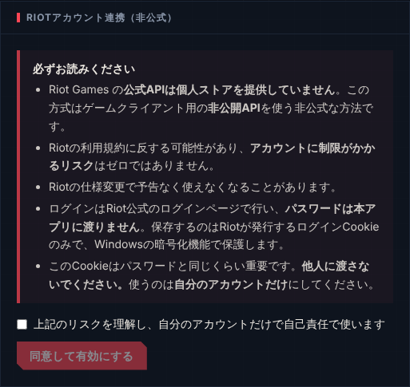
-
Riot公式ページでログイン を押します。別のウィンドウでRiotのログイン画面が開きます。
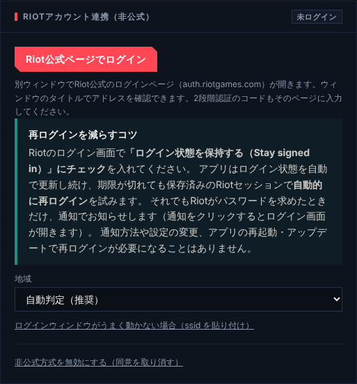
ウィンドウのタイトルが「🔒 auth.riotgames.com — Riot公式ログインページ」になっていることを確認してください。Riotの本物のページである目印です。
-
RiotのIDとパスワードを入れてログインします。「ログイン状態を保持する（Stay signed in）」に必ずチェックを入れてください。2段階認証を使っている場合は、メールやアプリに届いたコードもそのページに入力します。
「ログイン状態を保持する」が大事な理由
ここにチェックを入れると、Riotのログインが長持ちします。アプリは自動でログインを更新し続け、期限が切れても裏で自動的にログインし直すので、ふだんは一度ログインすれば何もしなくて大丈夫です。
-
ログインが終わるとウィンドウが自動で閉じます。設定画面に「ログイン済み」とあなたのRiot IDが表示され、すぐに今日のストアを取りに行きます。
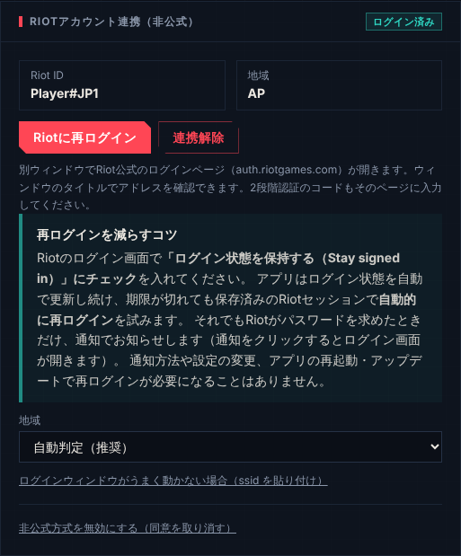
地域は自動で判定されます。日本のアカウントは「AP」です。
ログインのウィンドウがうまく開かないとき
設定画面の ログインウィンドウがうまく動かない場合（ssid を貼り付け） を開くと、普段使っているブラウザでログインして、ログイン情報（ssid）を貼り付ける方法が使えます。手順はアプリの画面に書いてあります。
通知の受け取り方を選ぶ
Discordへの届け方は2種類あります。どちらか一方を選んでください。あとからいつでも切り替えられます。
Webhook かんたん
自分のDiscordサーバーのチャンネルに投稿されます。
- 設定は URL を1つ貼るだけ
- 自分がサーバーの管理者である必要があります
- 仲間のサーバーのチャンネルで共有することもできます
BOT（DM） サーバー不要
自分専用のBOTから、自分個人のDMに届きます。
- サーバーを持っていなくても使えます
- BOTを作る手順が少し多め（5分ほど）
- スマホのDiscordにも通知が届きます
A. Webhook で受け取る
-
Discordで、通知を受け取りたいサーバーのチャンネル名の横の歯車（チャンネルの編集）を押します。
-
連携サービス → ウェブフック → 新しいウェブフック を押します。
-
できたウェブフックを開き、名前を「Store Watcher」などにして、ウェブフックURLをコピー を押します。
-
アプリの 設定 → Discord 通知先 で Webhook（サーバーのチャンネル） を選び、コピーしたURLを貼り付けて 保存 を押します。
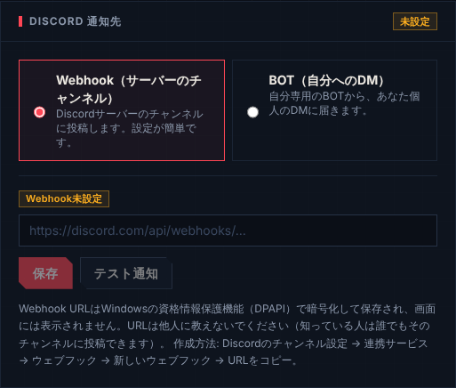
-
テスト通知 を押して、チャンネルに「✅ テスト通知です」と届けば完了です。
ウェブフックのURLを知っている人は、誰でもそのチャンネルに書き込めます。URLは人に見せないでください。うっかり見せてしまったら、Discord側でそのウェブフックを削除して作り直します。
B. BOT で自分のDMに受け取る
-
パソコンのブラウザで Discord Developer Portal を開き、Discordのアカウントでログインします。
-
右上の New Application を押し、好きな名前（例：
ストア通知）を入れて作成します。 -
左のメニューの Bot を開き、Reset Token を押してトークン（長い文字列）をコピーします。
トークンはパスワードと同じです。人に見せたり、チャットに貼ったりしないでください。
-
Discordアプリで ユーザー設定 → 詳細設定 → 開発者モード をオンにします。そのあと、自分のアイコンを右クリックして ユーザーIDをコピー を押します（数字が18桁前後並んだものです）。
-
アプリの 設定 → Discord 通知先 で BOT（自分へのDM） を選び、トークンとユーザーIDを入れて 保存 を押します。トークンが正しいかはその場で確認されます。
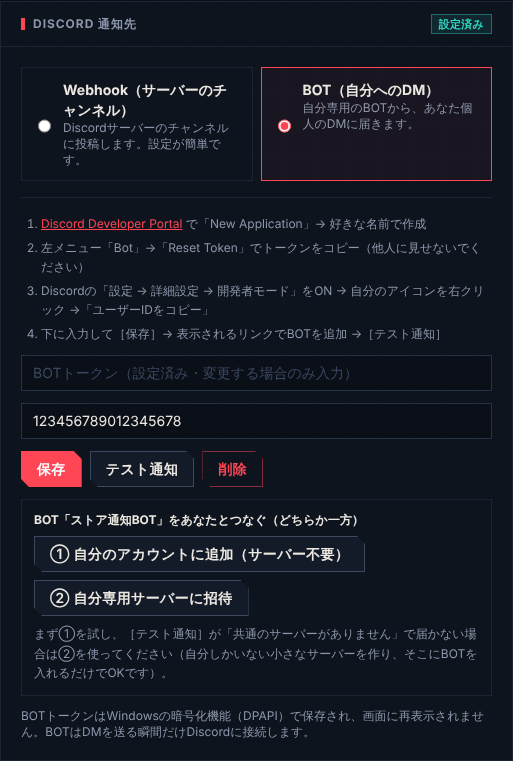
-
保存すると、BOTとあなたをつなぐボタンが2つ出ます。まず ① 自分のアカウントに追加（サーバー不要） を押し、ブラウザで出る画面で許可します。
-
テスト通知 を押して、DMにテストのメッセージが届けば完了です。
「共通のサーバーがありません」と出たら
Discordの仕組み上、BOTとあなたが同じサーバーにいないとDMが届かない場合があります。そのときは、Discordで自分しかいない小さなサーバーを作り、② 自分専用サーバーに招待 でBOTをそこに入れてから、もう一度 テスト通知 を押してください。サーバーは置いておくだけで、使う必要はありません。
どんなときに通知するか
設定 → 通知条件 で選べます。ふつうは最初のままで大丈夫です。Discordとは別に、Windowsの通知（画面右下に出るお知らせ）も使えます。Discordを使わず、Windows通知だけにすることもできます。
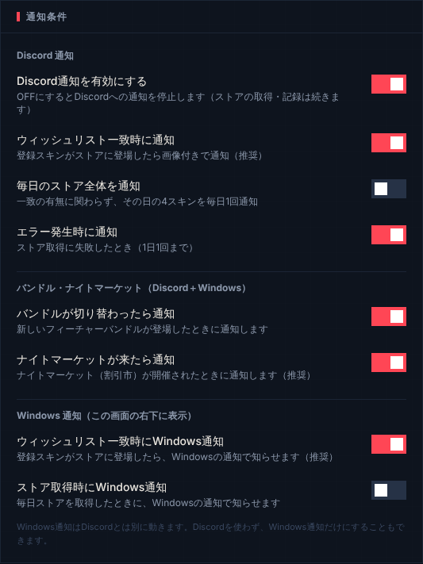
| スイッチ | オンにすると |
|---|---|
| ウィッシュリスト一致時に通知 | 登録したスキンがストアに出た日だけ、画像付きで届きます（おすすめ） |
| 毎日のストア全体を通知 | 一致がなくても、毎日その日の4スキンが届きます |
| エラー発生時に通知 | ストアを取れなかったときにお知らせします（1日1回まで） |
| Discord通知を有効にする | オフにすると、すべての通知を止めます（ストアの記録は続きます） |
スキンTier表を作って共有する
左メニューの Tier表メーカー で、自分だけのスキンTier表（S・A・B・C）が作れます。作った表は画像に保存したり、Xに投稿したりできます。
いちばん下の検索欄でスキンを探し、カードをつかんで上のTier（S〜C）にドラッグします。Tier表は上に固定され、下のスキン一覧だけがスクロールするので、たくさんのスキンから選んでもドラッグしやすくなっています。
Tierの色やアルファベット（S/A/B/Cなど）は、左の色ラベルから変更できます。上のタイトル欄に表の名前を入れられます。
スキンを外すときは、カード右上の × を押すか、下の検索エリアに戻します。
できたら右上のボタンで保存・共有します。
画像をコピー：画像をクリップボードにコピー（DiscordやLINEに貼り付け）
画像を保存：PNG画像としてパソコンに保存
X でシェア：画像をコピーしてXの投稿画面を開きます（投稿欄で貼り付け Ctrl+V）
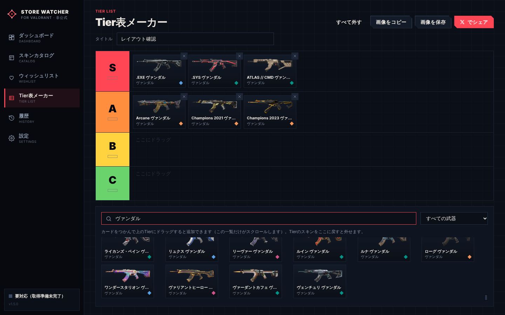
保存・共有される画像はこんな仕上がりです：
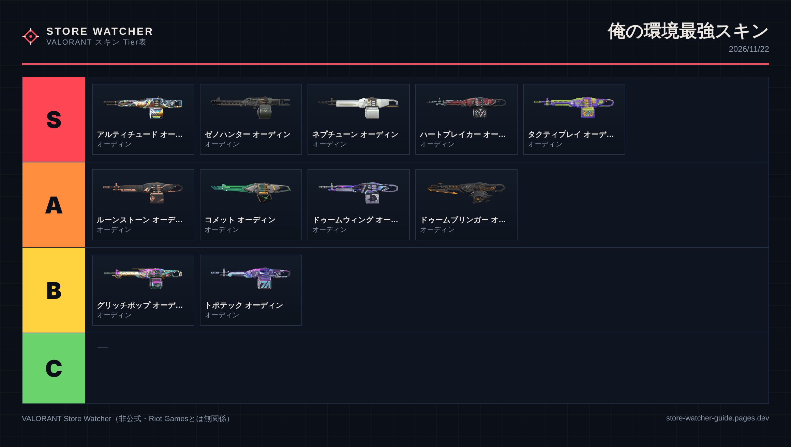
Xでのシェアは、Xの仕様で画像を自動では添付できません。アプリがコピーした画像を、投稿欄で貼り付け（Ctrl+V）してください。
毎日の使い方
ここまで設定すれば、あとは何もしなくて大丈夫です。アプリは毎朝ストアが新しくなったあと（日本時間 9時ごろ）に自動でチェックし、ウィッシュリストのスキンが出ていれば通知します。
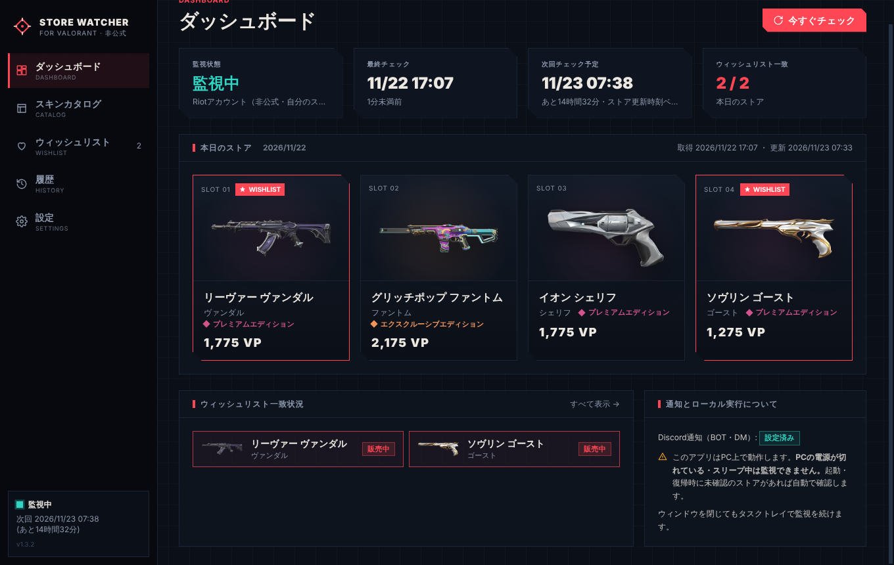
| 画面の場所 | わかること・できること |
|---|---|
| 監視状態 | 「監視中」なら正常です。「要対応」のときは、下のストア欄に理由が出ます |
| 次回チェック予定 | 次に自動でストアを見に行く時刻 |
| 本日のストア | 今日の4スキンと価格（VP） |
| 今すぐチェック | すぐにストアを確認します（同じ日の通知が2回届くことはありません） |
ウィンドウを閉じても動き続けます
右上の × でウィンドウを閉じても、画面右下のタスクトレイ（時計の近くのアイコン）で監視を続けます。アプリを完全に終わらせたいときは、トレイのアイコンを右クリックして 終了 を選びます。
パソコンを起動したら自動で始める
設定 → Windows の Windowsログイン時に自動起動 をオンにすると、パソコンを付けたときに自動でトレイに入って監視を始めます。
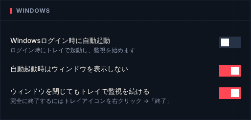
パソコンが止まっている間はチェックできません
このアプリはあなたのパソコンの上で動きます。電源が切れている間やスリープ中はストアを見られません。次にパソコンを付けたとき、まだ確認していないストアがあればすぐに自動で確認します。
チェックする時刻を変える
ふつうは変える必要はありません。アプリはストアの更新時刻をRiotから受け取り、その5分後にチェックします。更新時刻が分からないときは、設定 → 自動チェック の「チェック時刻」（最初は 9:05）に確認します。
アップデート
新しい版が出ると、Windowsの通知とダッシュボードでお知らせします。
設定 → アップデート を開きます。
ダウンロード を押し、終わったら 再起動して更新 を押します。
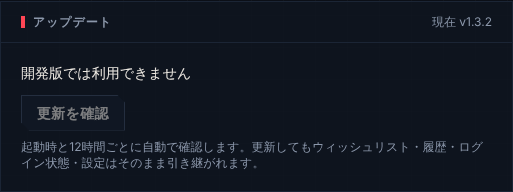
ウィッシュリスト、履歴、設定、Riotのログイン状態はそのまま引き継がれます。もし更新ボタンがうまく動かないときは、このページの 最新版をダウンロード から入れ直しても、データは消えません。
困ったとき
「Riotへの再ログインが必要です」と出た
Riotのログインの期限が切れ、アプリの自動ログインでも戻せなかったときに出ます。Windowsの通知をクリックするか、設定 → Riotに再ログイン を押してください。多くの場合はボタンを押すだけで終わります。
次回からは、Riotのログイン画面で「ログイン状態を保持する」にチェックを入れると、ほとんど出なくなります。
ダッシュボードに「ストアを取得できませんでした」と出た
理由と、次に自動でやり直す時刻が表示されます。VALORANTのメンテナンス中や、一時的な通信の不調ならそのまま待てば直ります。すぐ試したいときは 再試行 を押します。
通知が来ない
次の順に確かめてください。
① 設定 の「Discord 通知先」が「設定済み」になっているか ② テスト通知 が届くか ③「通知条件」のスイッチがオンか ④ 左メニュー 履歴 の「Discord通知履歴」「エラー履歴」に何か出ていないか
送れなかった通知は、次のチェックのときに自動でもう一度送られます。
同じスキンがまた出たのに通知されない
同じ日のストア（朝9時から翌朝9時まで）では1回だけ通知します。次の日以降にまた出たときは、もう一度通知されます。
画面に「テストモード」と出ている
設定 → ストア取得方法 が「テスト用ストア」になっています。表示されているのは本物ではない練習用のストアです。Riotアカウント を選び直してください。
サポートに伝える情報を集めたい
設定 のいちばん下の 診断情報を表示 を押すと、動作の記録（ログ）が出ます。トークンやパスワードなどの大事な情報は自動で隠されるので、そのまま送って大丈夫です。
安全に使うために
- このアプリはRiotのパスワードを受け取りません。「パスワードを入れれば自動で取れる」とうたう他のツールやBOTには、パスワードを渡さないでください。
- アプリが保存するRiotのログイン情報、Webhook URL、BOTトークンは、すべてWindowsの暗号化機能で守られ、画面にもう一度表示されることはありません。
- 使うのは自分のアカウントだけにしてください。他の人のログイン情報を預かったり、自分のログイン情報を渡したりしないでください。
- 設定 → 連携解除 を押すと、保存されたRiotのログイン情報はすべて削除されます。